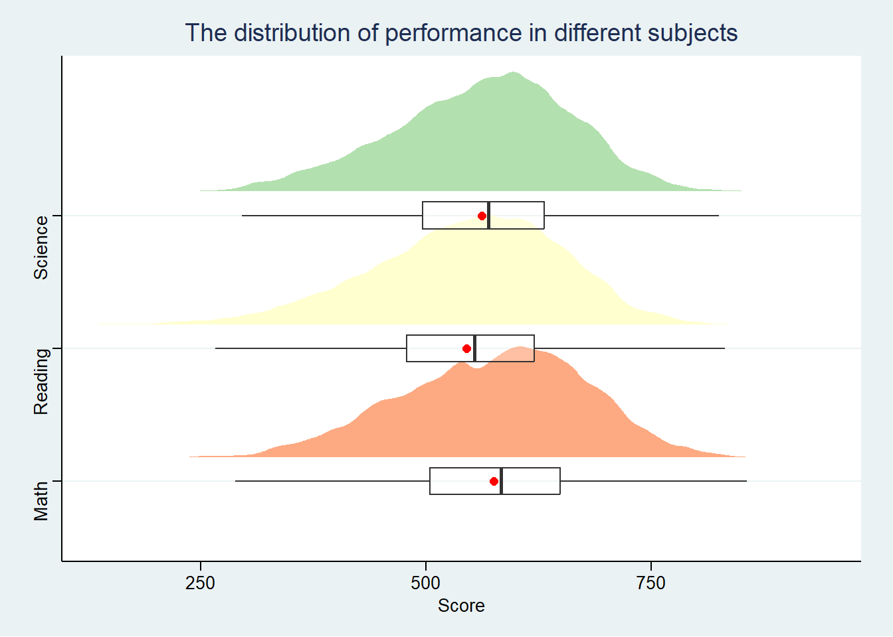
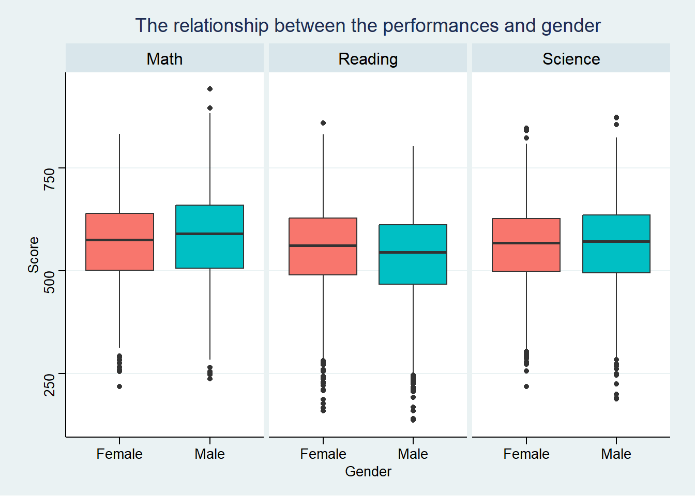
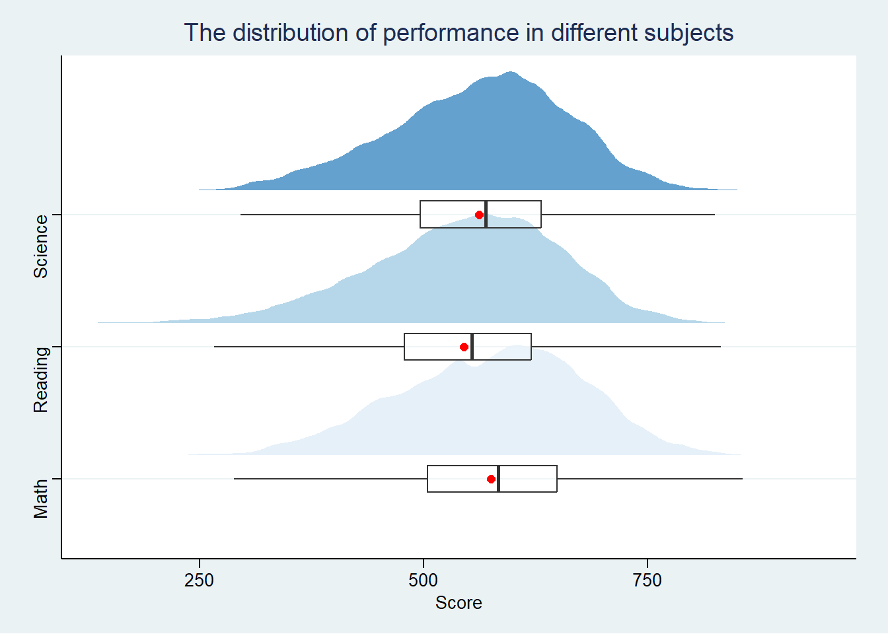
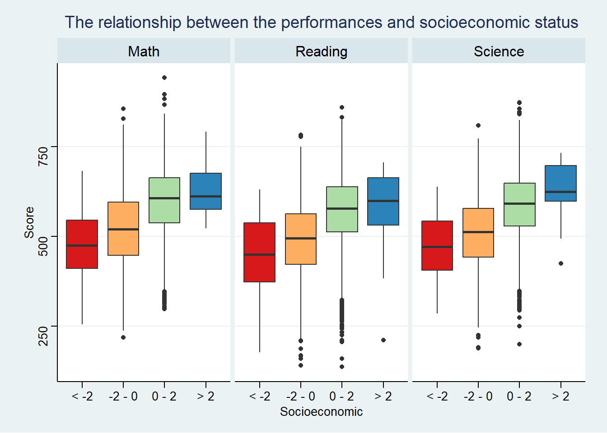

Code
pacman::p_load(ggthemes, ggdist, haven,tidyverse)January 17, 2024
January 22, 2024
OECD education director Andreas Schleicher shared in a BBC article that “Singapore managed to achieve excellence without wide differences between children from wealthy and disadvantaged families.” (2016) Furthermore, several Singapore’s Minister for Education also started an “every school a good school” slogan. The general public, however, strongly belief that there are still disparities that exist, especially between the elite schools and neighborhood school, between students from families with higher socioeconomic status and those with relatively lower socioeconomic status and immigration and non-immigration families.
The 2022 Programme for International Student Assessment (PISA) data was released on December 5, 2022. PISA global education survey every three years to assess the education systems worldwide through testing 15 year old students in the subjects of mathematics, reading, and science.
In this take-home exercise, we are required to use appropriate Exploratory Data Analysis (EDA) methods and ggplot2 functions to reveal:
the distribution of Singapore students’ performance in mathematics, reading, and science, and
the relationship between these performances with schools, gender and socioeconomic status of the students.
In this exercise, we use p_load() of pacman package to load required R packages. The packages that will be used are:
tidyverse
haven
ggthemes
ggdist
The PISA 2022 database contains the full set of responses from individual students, school principals and parents. These data files are in SAS and SPSS formats. For the purpose of this exercise, we will use the Student questionnaire data file only.
The code chunk below uses read_sas() of haven to import PISA data into R environment.
Since we will only focus on Singapore data, the code chunk below uses filter() of dplyr (one of the tidyverse package) to filter where country (CNT) is Singapore (SGP).
We will then save the object to an RDS file and load the file into the working environment.
write_rds() is a function to save an R object in a file using the RDS file format.read_rds() is a function used to read an R object from a file in the RDS format.# A tibble: 6 × 1,279
CNT CNTRYID CNTSCHID CNTSTUID CYC NatCen STRATUM SUBNATIO REGION OECD
<chr> <dbl> <dbl> <dbl> <chr> <chr> <chr> <chr> <dbl> <dbl>
1 SGP 702 70200052 70200001 08MS 070200 SGP01 7020000 70200 0
2 SGP 702 70200134 70200002 08MS 070200 SGP01 7020000 70200 0
3 SGP 702 70200112 70200003 08MS 070200 SGP01 7020000 70200 0
4 SGP 702 70200004 70200004 08MS 070200 SGP01 7020000 70200 0
5 SGP 702 70200152 70200005 08MS 070200 SGP01 7020000 70200 0
6 SGP 702 70200043 70200006 08MS 070200 SGP01 7020000 70200 0
# ℹ 1,269 more variables: ADMINMODE <dbl>, LANGTEST_QQQ <dbl>,
# LANGTEST_COG <dbl>, LANGTEST_PAQ <dbl>, Option_CT <dbl>, Option_FL <dbl>,
# Option_ICTQ <dbl>, Option_WBQ <dbl>, Option_PQ <dbl>, Option_TQ <dbl>,
# Option_UH <dbl>, BOOKID <dbl>, ST001D01T <dbl>, ST003D02T <dbl>,
# ST003D03T <dbl>, ST004D01T <dbl>, ST250Q01JA <dbl>, ST250Q02JA <dbl>,
# ST250Q03JA <dbl>, ST250Q04JA <dbl>, ST250Q05JA <dbl>, ST250D06JA <chr>,
# ST250D07JA <chr>, ST251Q01JA <dbl>, ST251Q02JA <dbl>, ST251Q03JA <dbl>, …We will select our variables of interest from 1279 variables and narrow them down to 6 variables. They are:
CNTSCHID: Intl. School ID
ST004D01T: Student Gender
ESCS: Index of economic, social and cultural status
PV1MATH: Plausible Value 1 in Mathematics
PV1READ: Plausible Value 1 in Reading
PV1SCIE: Plausible Value 1 in Science
We will then further rename them to more descriptive names.
# A tibble: 6 × 6
School_ID Gender Socioeconomic_status Math Reading Science
<dbl> <dbl> <dbl> <dbl> <dbl> <dbl>
1 70200052 1 0.184 639. 676. 711.
2 70200134 2 0.826 697. 626. 671.
3 70200112 2 -1.04 694. 620. 666.
4 70200004 2 -0.961 427. 381. 340.
5 70200152 1 0.0856 436. 448. 456.
6 70200043 1 0.127 570. 469. 475.We will check for missing values or duplicates and remove those rows, if there are any.
Looking at the structure of the prepared subset, we find that all variable are cast as <dbl>, which refers to the data type “double.” It is a numeric variable with double-precision floating-point numbers.
# A tibble: 6 × 6
School_ID Gender Socioeconomic_status Math Reading Science
<dbl> <dbl> <dbl> <dbl> <dbl> <dbl>
1 70200052 1 0.184 639. 676. 711.
2 70200134 2 0.826 697. 626. 671.
3 70200112 2 -1.04 694. 620. 666.
4 70200004 2 -0.961 427. 381. 340.
5 70200152 1 0.0856 436. 448. 456.
6 70200043 1 0.127 570. 469. 475.tibble [6,559 × 6] (S3: tbl_df/tbl/data.frame)
$ School_ID : num [1:6559] 70200052 70200134 70200112 70200004 70200152 ...
..- attr(*, "label")= chr "Intl. School ID"
$ Gender : num [1:6559] 1 2 2 2 1 1 2 2 1 2 ...
..- attr(*, "label")= chr "Student (Standardized) Gender"
$ Socioeconomic_status: num [1:6559] 0.1836 0.8261 -1.0357 -0.9606 0.0856 ...
..- attr(*, "label")= chr "Index of economic, social and cultural status"
$ Math : num [1:6559] 639 697 694 427 436 ...
..- attr(*, "label")= chr "Plausible Value 1 in Mathematics"
$ Reading : num [1:6559] 676 626 620 381 448 ...
..- attr(*, "label")= chr "Plausible Value 1 in Reading"
$ Science : num [1:6559] 711 671 666 340 456 ...
..- attr(*, "label")= chr "Plausible Value 1 in Science"
- attr(*, "na.action")= 'omit' Named int [1:47] 73 181 242 442 812 1152 1340 1535 1580 1647 ...
..- attr(*, "names")= chr [1:47] "73" "181" "242" "442" ...We need to convert some variables into appropriate data types, they are:
School_ID will be cast as character using as.character(). character represents text or strings.
Gender will be cast as factor using as.factor(). factor represents categorical data. It is used when the data has a limited number of distinct values.
# A tibble: 6 × 6
School_ID Gender Socioeconomic_status Math Reading Science
<chr> <fct> <dbl> <dbl> <dbl> <dbl>
1 70200052 1 0.184 639. 676. 711.
2 70200134 2 0.826 697. 626. 671.
3 70200112 2 -1.04 694. 620. 666.
4 70200004 2 -0.961 427. 381. 340.
5 70200152 1 0.0856 436. 448. 456.
6 70200043 1 0.127 570. 469. 475.tibble [6,559 × 6] (S3: tbl_df/tbl/data.frame)
$ School_ID : chr [1:6559] "70200052" "70200134" "70200112" "70200004" ...
$ Gender : Factor w/ 2 levels "1","2": 1 2 2 2 1 1 2 2 1 2 ...
$ Socioeconomic_status: num [1:6559] 0.1836 0.8261 -1.0357 -0.9606 0.0856 ...
..- attr(*, "label")= chr "Index of economic, social and cultural status"
$ Math : num [1:6559] 639 697 694 427 436 ...
..- attr(*, "label")= chr "Plausible Value 1 in Mathematics"
$ Reading : num [1:6559] 676 626 620 381 448 ...
..- attr(*, "label")= chr "Plausible Value 1 in Reading"
$ Science : num [1:6559] 711 671 666 340 456 ...
..- attr(*, "label")= chr "Plausible Value 1 in Science"
- attr(*, "na.action")= 'omit' Named int [1:47] 73 181 242 442 812 1152 1340 1535 1580 1647 ...
..- attr(*, "names")= chr [1:47] "73" "181" "242" "442" ...The recode() function of dplyr will be used to replace the values for variable “Gender”, where
1 -> Female and
2 -> Male.
# A tibble: 6 × 6
School_ID Gender Socioeconomic_status Math Reading Science
<chr> <fct> <dbl> <dbl> <dbl> <dbl>
1 70200052 Female 0.184 639. 676. 711.
2 70200134 Male 0.826 697. 626. 671.
3 70200112 Male -1.04 694. 620. 666.
4 70200004 Male -0.961 427. 381. 340.
5 70200152 Female 0.0856 436. 448. 456.
6 70200043 Female 0.127 570. 469. 475.We will plot a Half-Eye graph by using stat_halfeye() of ggdist package to show the distribution of performance in different subjects. Next, we will add the second geometry layer using geom_boxplot(), and add mean values by using stat_summary().
Before that, the gather() function of tidyverse will be used to reshape the data from wide to long format.
# Reshape the data using gather
data_long <- tidyr::gather(data=subset_clean, key = "subject", value = "score", 4:6)
# Create the plot
ggplot(data_long,
aes(x = score,
y = subject)) +
stat_halfeye(aes(fill=subject),
adjust = .5,
justification = -0.2,
.width = 0,
point_colour = NA,
alpha = .75) +
scale_fill_brewer(palette="Spectral")+
geom_boxplot(width = .20,
outlier.shape = NA,
alpha = 0.25) +
stat_summary(geom = "point",
fun.y="mean",
colour ="red",
size=2) +
labs(x = "Score",
y = NULL,
title = "The distribution of performance in different subjects")+
theme_stata() +
theme(legend.position = "none")
Symmetrical curves seem to mirror Normal distributions across subjects.
The range and distribution shape of scores in the three subjects seem very similar.
Mathematics exhibits the highest median and average score compared to the other two subjects.
4.2.1 The relationship between the performances with gender

Overall, gender seems not affecting much on the performances across subjects, as there’s no obvious difference in score in the boxplots.
Male students performed slightly better than female students in mathematics, while female students performed slightly better than male students in reading.
4.2.2 The relationship between the performances with socioeconomic status
Firstly, we will plot a histogram to understand the target variable “socioeconomic_status”

Given the abundance of data points, we will categorize them into four distinct groups before proceeding to create the visualization. They are: “< -2”, “-2 - 0”, “0 - 2”, “> 2”.
This categorization aims to enhance clarity and facilitate a more focused and meaningful presentation of the information.
# A tibble: 6 × 6
School_ID Gender Socioeconomic_status subject score Socioeconomic
<chr> <fct> <dbl> <chr> <dbl> <fct>
1 70200052 Female 0.184 Math 639. 0 - 2
2 70200134 Male 0.826 Math 697. 0 - 2
3 70200112 Male -1.04 Math 694. -2 - 0
4 70200004 Male -0.961 Math 427. -2 - 0
5 70200152 Female 0.0856 Math 436. 0 - 2
6 70200043 Female 0.127 Math 570. 0 - 2 ggplot(data_long,
aes(y = score, x= Socioeconomic, fill = Socioeconomic)) +
scale_fill_brewer(palette="Spectral")+
geom_boxplot() +
facet_wrap(~ subject) +
labs(y = "Score",
title = "The relationship between the performances and socioeconomic status")+
theme_stata() +
theme(legend.position = "none")
Students with higher socioeconomic score performed better across all three subjects.
There’s not much difference on performaces for students with positive socioeconomic score, no matter above 2 or not.
Through this exercise, we illustrated the utility of interactive and statistical plots in comprehending and analyzing PISA data.
In Section 4, we employed diverse visualizations to delve into the data, unraveling its distribution, relationships, and patterns. We compared the distributions of the three different subjects - mathematics, reading, and science, and revealed that the shape of the scores in the three subjects seem very similar. Additionaly, our exploration also revealed correlations such as higher socioeconomic status score being linked to better performances across different subjects.